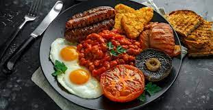
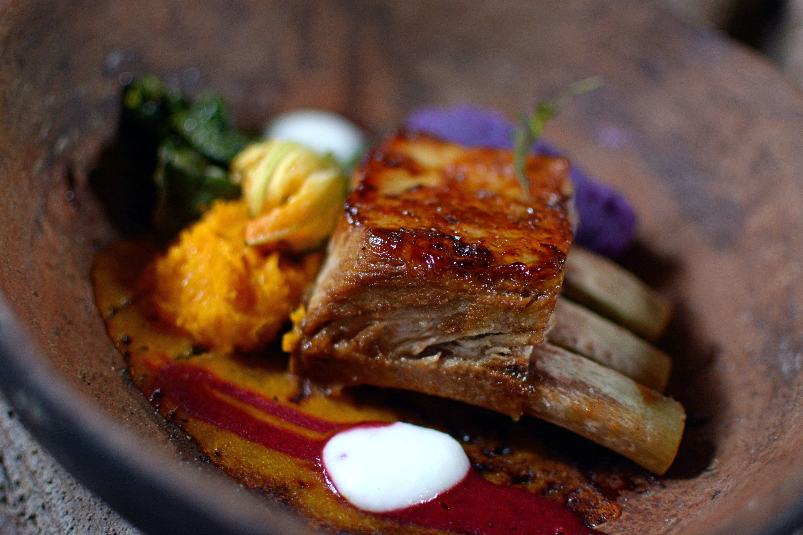

Food in Ireland
These are some of my favourite Irish dishes
Traditional Irish breakfast

All full Irish breakfasts include some or all of the following: Bacon, sausages, baked beans, eggs, mushrooms, grilled tomatoes, and perhaps some cooked leftover potatoes made into a hash or a bubble and squeak. There will also be toast, butter, marmalade, and lots of tea to drink.
Bangers and Mash
Bangers and mash, also known as sausages and mash, is a traditional British dish, consisting of sausages served with mashed potatoes. It may consist of one of a variety of flavoured sausages made of pork, lamb, or beef. The dish is usually served with onion gravy, but may also include fried onions and peas.
